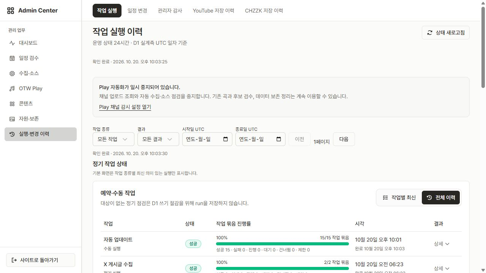

PR #176 · 수정·병합·양 사이트 운영 검증 완료
OTW·LuvDia 프로젝트 구조도
현재 코드 b0818c0d · 운영 관측 2026-10-20 22:03 KST · 문서 정리 변경 포함
과거 미커밋 트리의 이관 경로를 현행 구조에서 분리했습니다. 확인된 결함 수정과 미실행 구조 개편 제안을 구분합니다.
전체 구조 · 현행 소유권
코드·설정 1,010개, 핵심 문서·Wrangler 28개. 테스트·아카이브·생성 snapshot 제외. 정적 노드 8,373개, 관계 28,655개.
파일 소유 경로별 분석 범위
| 소유 경로 | 파일 수 |
|---|---|
| (root) | 20 |
| .agent/rules | 2 |
| .impeccable/config.json | 1 |
| .impeccable/live | 1 |
| contracts/api-routes.ts | 1 |
| contracts/assets.ts | 1 |
| contracts/audit.ts | 1 |
| contracts/auth.ts | 1 |
| contracts/chzzk-scan.ts | 1 |
| contracts/chzzk.ts | 1 |
| contracts/configuration.ts | 1 |
| contracts/content-history.ts | 1 |
| contracts/ddays.ts | 1 |
| contracts/member-posts.ts | 1 |
| contracts/members.ts | 1 |
| contracts/naver-cafe.ts | 1 |
| contracts/notices.ts | 1 |
| contracts/numeric-id.ts | 1 |
| contracts/operations.ts | 1 |
| contracts/otw-play-access.ts | 1 |
| contracts/otw-play-ai-batch.ts | 1 |
| contracts/otw-play-ai-review.ts | 1 |
| contracts/otw-play-members.ts | 1 |
| contracts/otw-play-playlists.ts | 1 |
| contracts/otw-play-search.ts | 1 |
| contracts/otw-play-tags.ts | 1 |
| contracts/otw-play-work-queue.ts | 1 |
| contracts/otw-play.ts | 1 |
| contracts/pending-schedules.ts | 1 |
| contracts/schedule-board.ts | 1 |
| contracts/schedule-member-policy.ts | 1 |
| contracts/scheduled-operations.ts | 1 |
| contracts/schedules.ts | 1 |
| contracts/site-definition.ts | 1 |
| contracts/site-public-content.ts | 1 |
| contracts/site-publication.ts | 1 |
| contracts/site-seo.ts | 1 |
| contracts/x-posts.ts | 1 |
| contracts/youtube.ts | 1 |
| db/schema | 1 |
| docs/README.md | 1 |
| docs/aeo.md | 1 |
| docs/architecture-review.md | 1 |
| docs/architecture.md | 1 |
| docs/auto-update.md | 1 |
| docs/cache-policy.md | 1 |
| docs/current-work.md | 1 |
| docs/drizzle-workflow.md | 1 |
| docs/operations | 6 |
| docs/otw-play-admin-workflow-integration.md | 1 |
| docs/otw-play-ai-review.md | 1 |
| docs/otw-play-implementation-guide.md | 1 |
| docs/otw-play-product-requirements.md | 1 |
| docs/otw-play-system-design.md | 1 |
| docs/testing.md | 1 |
| docs/youtube-optimization.md | 1 |
| drizzle/0000_flaky_spyke.sql | 1 |
| drizzle/0001_pink_whirlwind.sql | 1 |
| drizzle/0002_powerful_absorbing_man.sql | 1 |
| drizzle/0003_volatile_smiling_tiger.sql | 1 |
| drizzle/0004_radiant_dday.sql | 1 |
| drizzle/0005_kind_dday_type.sql | 1 |
| drizzle/0006_fix_idx_schedules_date.sql | 1 |
| drizzle/0007_drop_ddays_idx.sql | 1 |
| drizzle/0008_reset_ddays.sql | 1 |
| drizzle/0009_condemned_maximus.sql | 1 |
| drizzle/0011_cold_maximus.sql | 1 |
| drizzle/0012_flimsy_millenium_guard.sql | 1 |
| drizzle/0013_add_pending_schedules.sql | 1 |
| drizzle/0014_heavy_slapstick.sql | 1 |
| drizzle/0015_chilly_red_skull.sql | 1 |
| drizzle/0016_breezy_norrin_radd.sql | 1 |
| drizzle/0017_short_satana.sql | 1 |
| drizzle/0018_woozy_yellow_claw.sql | 1 |
| drizzle/0019_romantic_ultimates.sql | 1 |
| drizzle/0020_omniscient_excalibur.sql | 1 |
| drizzle/0021_silky_rachel_grey.sql | 1 |
| drizzle/0022_parched_slayback.sql | 1 |
| drizzle/0023_groovy_molly_hayes.sql | 1 |
| drizzle/0024_unique_daimon_hellstrom.sql | 1 |
| drizzle/0025_high_centennial.sql | 1 |
| drizzle/0026_first_toro.sql | 1 |
| drizzle/0027_heavy_cassandra_nova.sql | 1 |
| drizzle/0028_backfill_member_profile_images.sql | 1 |
| drizzle/0029_fat_agent_brand.sql | 1 |
| drizzle/0030_tiresome_boomerang.sql | 1 |
| drizzle/0031_loving_wallflower.sql | 1 |
| drizzle/0032_wakeful_boom_boom.sql | 1 |
| drizzle/0033_lovely_senator_kelly.sql | 1 |
| drizzle/0034_parched_khan.sql | 1 |
| drizzle/0035_amusing_the_renegades.sql | 1 |
| drizzle/0036_legal_queen_noir.sql | 1 |
| drizzle/0037_fast_power_man.sql | 1 |
| drizzle/0038_misty_speed_demon.sql | 1 |
| drizzle/0039_uneven_killmonger.sql | 1 |
| drizzle/0040_fixed_black_crow.sql | 1 |
| drizzle/0041_dear_malice.sql | 1 |
| drizzle/0042_normalize-featured-notice.sql | 1 |
| drizzle/0043_curly_clea.sql | 1 |
| drizzle/0044_careful_guardsmen.sql | 1 |
| drizzle/0045_notice-multi-content.sql | 1 |
| drizzle/0046_tan_nova.sql | 1 |
| drizzle/0047_nasty_cargill.sql | 1 |
| drizzle/0048_previous_the_phantom.sql | 1 |
| drizzle/0049_otw_play_catalog_meta_seed.sql | 1 |
| drizzle/0050_parched_marvel_apes.sql | 1 |
| drizzle/0051_clear_mantis.sql | 1 |
| drizzle/0052_otw-play-public-read-model-backfill.sql | 1 |
| drizzle/0053_red_talon.sql | 1 |
| drizzle/0054_odd_storm.sql | 1 |
| drizzle/0055_tiresome_pride.sql | 1 |
| drizzle/0056_moaning_killmonger.sql | 1 |
| drizzle/0057_numerous_luminals.sql | 1 |
| drizzle/0058_awesome_lorna_dane.sql | 1 |
| drizzle/0059_demonic_luke_cage.sql | 1 |
| drizzle/0060_ancient_cardiac.sql | 1 |
| drizzle/0061_otw-play-member-entity-backfill.sql | 1 |
| drizzle/0062_colorful_magma.sql | 1 |
| drizzle/0063_youthful_jamie_braddock.sql | 1 |
| drizzle/0064_loud_black_tom.sql | 1 |
| drizzle/0065_otw_play_authority_retention.sql | 1 |
| drizzle/0066_otw_play_integrity_drift.sql | 1 |
| drizzle/0067_otw-play-external-identity-consolidation.sql | 1 |
| drizzle/0068_fixed_amazoness.sql | 1 |
| drizzle/0069_cold_infant_terrible.sql | 1 |
| drizzle/0070_otw-play-performance-tags.sql | 1 |
| drizzle/0071_gifted_romulus.sql | 1 |
| drizzle/0072_common_katie_power.sql | 1 |
| drizzle/0073_mysterious_jean_grey.sql | 1 |
| drizzle/0074_backfill-post-first-seen.sql | 1 |
| drizzle/0075_colorful_layla_miller.sql | 1 |
| drizzle/0076_x-history-default-flags.sql | 1 |
| drizzle/0077_ambiguous_post.sql | 1 |
| drizzle/0078_wealthy_marvel_apes.sql | 1 |
| drizzle/0079_next_iron_fist.sql | 1 |
| drizzle/0080_wealthy_titanium_man.sql | 1 |
| drizzle/0081_normalize_x_source_handles.sql | 1 |
| drizzle/0082_chief_tigra.sql | 1 |
| drizzle/0083_youthful_norman_osborn.sql | 1 |
| drizzle/0084_x-reply-stored-or-link.sql | 1 |
| drizzle/0085_retire_websub_hourly_polling.sql | 1 |
| drizzle/0086_canonical-youtube-quota.sql | 1 |
| drizzle/0087_burly_midnight.sql | 1 |
| drizzle/0088_friendly_photon.sql | 1 |
| drizzle/0089_ambitious_titania.sql | 1 |
| drizzle/0090_demonic_sugar_man.sql | 1 |
| drizzle/0091_tranquil_luke_cage.sql | 1 |
| drizzle/0092_perfect_manta.sql | 1 |
| drizzle/0093_omniscient_sunset_bain.sql | 1 |
| drizzle/0094_reflective_spirit.sql | 1 |
| drizzle/0095_otw-play-ready-search-backfill.sql | 1 |
| drizzle/0096_unknown_hex.sql | 1 |
| drizzle/0097_fine_agent_zero.sql | 1 |
| drizzle/0098_late_beast.sql | 1 |
| drizzle/0099_acoustic_rachel_grey.sql | 1 |
| drizzle/0100_far_shotgun.sql | 1 |
| drizzle/0101_playlist_work_progress_backfill.sql | 1 |
| drizzle/0102_content_transition_foundation.sql | 1 |
| drizzle/0103_content_transition_capture.sql | 1 |
| drizzle/0104_asset_file_recovery.sql | 1 |
| drizzle/0105_asset_file_capture.sql | 1 |
| drizzle/0106_asset_file_cleanup.sql | 1 |
| drizzle/0107_asset_file_reference_guards.sql | 1 |
| drizzle/0108_asset_file_owner_identity.sql | 1 |
| drizzle/0109_file_availability_evidence.sql | 1 |
| drizzle/0110_asset_file_cafe_capture.sql | 1 |
| drizzle/0111_asset_file_url_identity.sql | 1 |
| drizzle/0112_asset_file_url_capture.sql | 1 |
| drizzle/0113_normal_husk.sql | 1 |
| drizzle/0114_asset_file_inventory_guards.sql | 1 |
| drizzle/0115_asset_file_path_authority.sql | 1 |
| drizzle/0116_asset_file_url_parse_order.sql | 1 |
| drizzle/0117_asset_file_decode_validity.sql | 1 |
| drizzle/0118_schedule_audit_capture_independence.sql | 1 |
| drizzle/0119_inactive_target_baseline_authority.sql | 1 |
| drizzle/0120_native_dday_owning_receipt.sql | 1 |
| drizzle/0121_chzzk_read_request_journal.sql | 1 |
| drizzle/0122_chzzk_read_attempt_uncertainty.sql | 1 |
| drizzle/0123_chzzk_read_resolution_receipt.sql | 1 |
| drizzle/0124_chzzk_original_continuation_stage.sql | 1 |
| drizzle/0125_chzzk_original_batch_receipts.sql | 1 |
| drizzle/0126_admitted_channel_dependency_capture.sql | 1 |
| drizzle/0127_original_proposal_event_capture.sql | 1 |
| drizzle/0128_member_submission_event_capture.sql | 1 |
| drizzle/0129_admitted_video_dependency_capture.sql | 1 |
| drizzle/0130_admitted_conversion_dependency_capture.sql | 1 |
| drizzle/0131_admitted_candidate_metadata_capture.sql | 1 |
| drizzle/0132_admitted_channel_approval_capture.sql | 1 |
| drizzle/0133_transition_maintenance_stop.sql | 1 |
| drizzle/0134_transition_abort_evidence.sql | 1 |
| drizzle/0135_transition_scheduled_reconciliation.sql | 1 |
| drizzle/0136_transition_unresolved_scheduled_outbox.sql | 1 |
| drizzle/0137_x-repair-pending.sql | 1 |
| drizzle/0138_x-repair-invalidation.sql | 1 |
| drizzle/0139_x-repair-maintenance-guards.sql | 1 |
| drizzle/0140_publication-ingestion-evidence.sql | 1 |
| drizzle/0141_retire_content_transition.sql | 1 |
| drizzle/0142_aberrant_exodus.sql | 1 |
| drizzle/0143_skinny_captain_marvel.sql | 1 |
| drizzle/0144_talented_cassandra_nova.sql | 1 |
| drizzle/0145_third_puma.sql | 1 |
| drizzle/0146_sparkling_black_panther.sql | 1 |
| drizzle/0147_young_night_nurse.sql | 1 |
| drizzle/0148_soft_power_pack.sql | 1 |
| scripts/architecture-check.mjs | 1 |
| scripts/benchmark-otw-play-reads.mjs | 1 |
| scripts/build-site.mjs | 1 |
| scripts/clerk-environment.d.mts | 1 |
| scripts/clerk-environment.mjs | 1 |
| scripts/client-build-deploy-guard.mjs | 1 |
| scripts/d1-doctor-core.mjs | 1 |
| scripts/d1-doctor.mjs | 1 |
| scripts/d1-local-options.mjs | 1 |
| scripts/d1-metrics-deploy-guard.mjs | 1 |
| scripts/d1-migrate-local.mjs | 1 |
| scripts/d1-reset-guard.mjs | 1 |
| scripts/d1-reset-local.mjs | 1 |
| scripts/d1-seed-guard.mjs | 1 |
| scripts/d1-seed-local.mjs | 1 |
| scripts/deploy-workers.mjs | 1 |
| scripts/dev-process.mjs | 1 |
| scripts/dev-restart.mjs | 1 |
| scripts/generate-seo-assets.ts | 1 |
| scripts/local-dev-config.d.mts | 1 |
| scripts/local-dev-config.mjs | 1 |
| scripts/local-site-config.d.mts | 1 |
| scripts/local-site-config.mjs | 1 |
| scripts/maintenance | 1 |
| scripts/optimize-profile-backgrounds.mjs | 1 |
| scripts/otw-play-search-integrity.sql | 1 |
| scripts/preflight.mjs | 1 |
| scripts/profile-background-upload-runner.ts | 1 |
| scripts/provision-ops-queues.mjs | 1 |
| scripts/run-site.mjs | 1 |
| scripts/site-build-manifest.mjs | 1 |
| scripts/site-resources.d.mts | 1 |
| scripts/site-resources.mjs | 1 |
| scripts/site-target.d.mts | 1 |
| scripts/site-target.mjs | 1 |
| scripts/static-asset-manifest.d.mts | 1 |
| scripts/static-asset-manifest.mjs | 1 |
| scripts/sync-agent-to-cursor.mjs | 1 |
| scripts/upload-profile-backgrounds-to-r2.d.mts | 1 |
| scripts/upload-profile-backgrounds-to-r2.mjs | 1 |
| src/app | 19 |
| src/features | 277 |
| src/main.tsx | 1 |
| src/routes | 47 |
| src/shared | 62 |
| src/test | 3 |
| src/vite-env.d.ts | 1 |
| worker/app | 18 |
| worker/features | 325 |
| worker/index.ts | 1 |
| worker/platform | 14 |
| worker/workflows | 1 |
후보01 · 저장과 재시도 의미 복구 완료
성공 snapshot과 업무 쓰기를 같은 D1 batch에 둡니다. 동일 의도의 재전송은 저장 당시 결과를 돌려주고 진짜 stale 충돌은 입력을 보존한 채 재검토합니다. migration0148 적용, 미사용 보조 함수6개 제거.
운영 정상 관리자 저장: OTW Adrena version0→1 / revision1101→1102, LuvDia Bunny Girl version0→1 / revision2→3. 내용·관계 동일, HTTP200 완료 기록 각각1건. 운영에서 응답 유실·동시 요청을 강제로 만들지는 않았습니다.
후보02 · 조회 결과의 최신 상태와 행 순서 완료
목록·선택 보완·오류 재시도를 기존 query 모듈이 소유합니다. 최신 행 내용과 최초 위치를 별도로 유지하고 검색은 LIMIT 묶음과 정확 제목·별칭 조회를 사용합니다.
운영 양 사이트 검색 성공, 다음25곡을 로드한 뒤 기존25곡 순서 유지. 로컬5,000곡 fixture의 검색 읽기10,607→659행, 선택5,254→283행은 운영 과금·모든 검색어 상한의 측정이 아닙니다.
후보03 · 일정 단계·중지·소유권 완료
확인된 지적1~5와 늦은 하위 메시지 우회, 자동 리뷰의 과거 match 잔존 P2를 보완했습니다. 설정·lease·단계 검사와 업무 쓰기가 원자 경계 안에 있습니다.
재전달과 실제 retry의 경계
D1ScheduledJobRepository가 run/item/outbox와 시도 marker를 소유합니다. 새 scan에서 제외된 옛 match·outbox의 종료와 새 계획은 같은 batch입니다. 별도 범용 phase 엔진은 도입하지 않았습니다.
병합·운영 검증 · 당시 실제 관측
| 운영 결과 | OTW | LuvDia |
|---|---|---|
| Worker 버전 /100% | d5763ac9… | 82776027… |
| 실제 HTTP→Queue→D1 | scan3 · match11 · finalize1 15/15 성공 | scan2 · match8 · finalize1 11/11 성공 |
| 업무 이력 | 277 success · checked10 · 새 후보0 | 6 success · checked7 · 새 후보0 |
| 미해결 outbox | 0 | 0 |
| Play 자동화 | 중지 유지 | 중지 유지 |
| AI 바인딩 | 기존 true 유지 · 호출 없음 | false 유지 · 호출 없음 |
정상 관리자 메뉴의 기존 곡 저장·검색·페이지 이동과 일정 지금 수집 1회씩으로 확인했습니다. HTTP202 접수만으로 성공 처리하지 않았습니다. 수집 범위·24시간 주기는 유지하고 정상 완료 시각만 갱신했습니다. 공개 승인·새 후보 생성은 없습니다.
D1 실제 사용량 양쪽 정상 표시. 22:02 KST 계정 읽기499,935/5,000,000(10.0%), 쓰기 OTW381/LuvDia718. 집계 지연이 있는 당시 값입니다. 최종 PR ledger · 버전·run identity



근거와 검증 한계
최종 head689538d6 / mergeb0818c0d, 동일 tree86616c53. 공식 preflight의 UI 시간초과2건·Worker 시작 실패는 재실행으로 보완한 합성 검증이며 단일 전체 명령 PASS가 아닙니다. 최종 D1 회귀32건·공식 archive/Queue/native Workflow97건·타입·lint·구조·mirror·양 사이트 build·격리 clean doctor 통과.
- 운영 장애 주입·다음 자연 Cron·장기간 부하·모든 검색어의 비용 상한은 미검증입니다.
- 배포 전에 열린 LuvDia 탭의 구형 chunk 오류는 새로고침 후 회복했습니다.
- 구조도 화살표는 소스·계약을 확인한 설명입니다. Graphify 정적 관계 자체가 실행 성공을 증명하지 않습니다. 전체 기호와 원본 관계는 graph.json.gz / extraction-evidence.json.gz에 보존합니다.
- 원본 정적 추출 진단: dangling_endpoint_edges=212, self_loop_edges=23, directed_same_endpoint_collapsed_edges=12135, undirected_same_endpoint_collapsed_edges=12141. TSX 부분 파싱 경고는 추출 로그와 진단에 보존합니다.
- 5,000개 초과 노드는 관계 탐색 HTML에서 군집으로 집약하며 전체 노드는 압축 JSON에 보존합니다.
- 외부 유료 AI 호출0, 호스트 의미 추출 토큰은 미측정입니다.
병합 소스의 주요 근거
- src/features/otw-play/queries/use-admin-catalog.ts:30
- worker/features/otw-play/infrastructure/d1-admin-catalog-repository.ts:939
- worker/features/schedules/http/manual-auto-update-handler.ts:18
- worker/features/schedules/infrastructure/publication-writers.ts:12
- worker/platform/scheduled-jobs/d1-scheduled-job-repository.ts:404
- worker/features/scheduled-operations/infrastructure/scheduled-job-coordinator.ts:200
완료 자료 아카이브
원래 검토·로컬 구현 보고서와 화면 증거는 docs/archive/2026-10-20-candidates-1-3/에 보관했습니다. 기존 문서 URL에는 이동 안내를 유지합니다. 비공개 가능 실행 로그는 Git 제외 로컬 보관소로 이동했고 파일 해시를 확인했습니다. 공개 문서의 manifest는 저장소 상대 경로를 사용합니다.
과거 분석 보관 안내 · 당시 분석·운영 기록 · 이동·해시 목록
과거 D1TransitionRepository 추적
이관 실행부는 PR161에서 폐기됐습니다. CONTENT_TRANSITION_PEER 부재는 현행 운영의 누락 오류가 아닙니다. 과거 구현 추적 원문과 현재 저장·예약 경로를 혼합하지 않습니다.
대규모 repository 분할·범용 phase 엔진은 미실행 제안입니다. 확인된 결함 수정 완료가 이 제안의 구현 승인이나 자동화 재개를 뜻하지 않습니다.